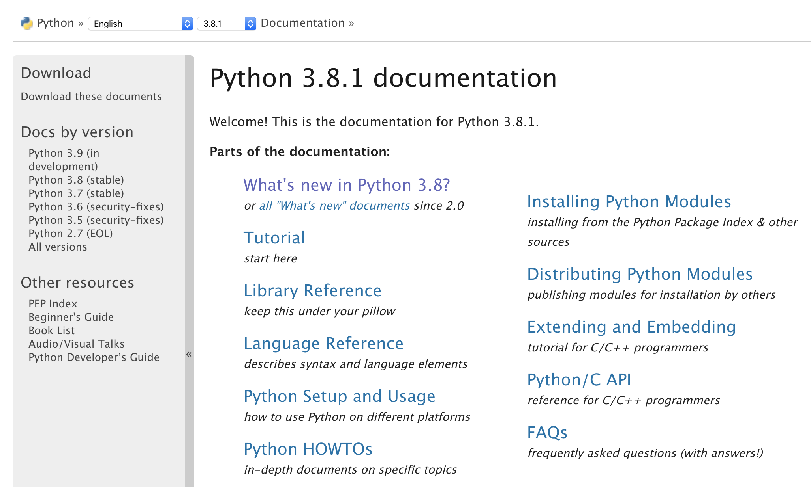
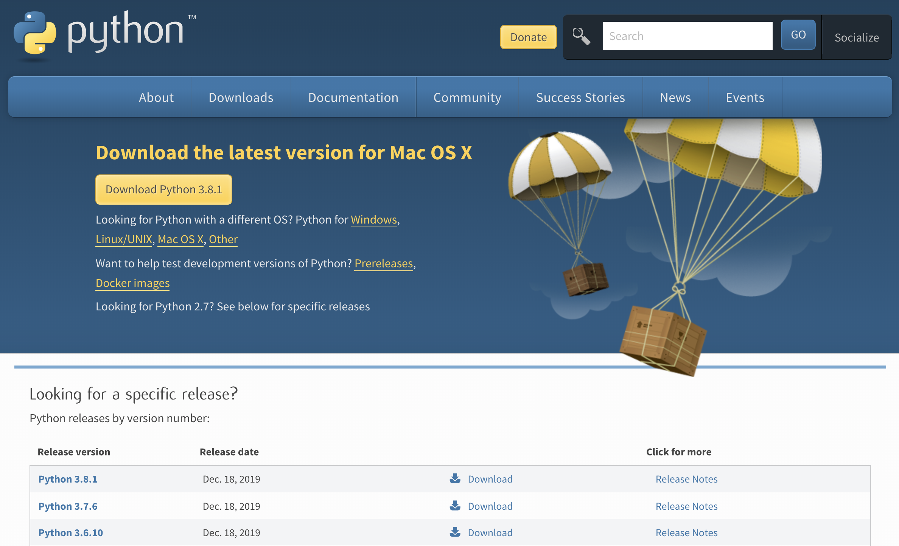

Introduction¶
print('Hello!')¶
import this
The Zen of Python, by Tim Peters Beautiful is better than ugly. Explicit is better than implicit. Simple is better than complex. Complex is better than complicated. Flat is better than nested. Sparse is better than dense. Readability counts. Special cases aren't special enough to break the rules. Although practicality beats purity. Errors should never pass silently. Unless explicitly silenced. In the face of ambiguity, refuse the temptation to guess. There should be one-- and preferably only one --obvious way to do it. Although that way may not be obvious at first unless you're Dutch. Now is better than never. Although never is often better than right now. If the implementation is hard to explain, it's a bad idea. If the implementation is easy to explain, it may be a good idea. Namespaces are one honking great idea -- let's do more of those!
past and present¶
From https://en.wikipedia.org/wiki/Python_(programming_language) - Python is an interpreted, high-level, general-purpose programming language. Created by Guido van Rossum and first released in 1991, Python’s design philosophy emphasizes code readability with its notable use of significant whitespace. Its language constructs and object-oriented approach aim to help programmers write clear, logical code for small and large-scale projects. - Python is dynamically typed and garbage-collected. It supports multiple programming paradigms, including procedural, object-oriented, and functional programming. Python is often described as a “batteries included” language due to its comprehensive standard library. - Python was conceived in the late 1980s as a successor to the ABC language. Python 2.0, released in 2000, introduced features like list comprehensions and a garbage collection system capable of collecting reference cycles. Python 3.0, released in 2008, was a major revision of the language that is not completely backward-compatible, and much Python 2 code does not run unmodified on Python 3. - PSF Python Brochure Project
Functions Defined. The core of extensible programming is defining functions. Python allows mandatory and optional arguments, keyword arguments, and even arbitrary argument lists.
Compound Data Types. Lists (known as arrays in other languages) are one of the compound data types that Python understands. Lists can be indexed, sliced and manipulated with other built-in functions.
Intuitive Interpretation. Calculations are simple with Python, and expression syntax is straightforward: the operators +, -, * and / work as expected; parentheses () can be used for grouping.
Quick & Easy to Learn. Experienced programmers in any other language can pick up Python very quickly, and beginners find the clean syntax and indentation structure easy to learn.
All the Flow You’d Expect. Python knows the usual control flow statements that other languages speak —
if, for, whileandrange— with some of its own twists, of course.
Some supporting quotes here.
beware of shadows¶
Python can be installed in many different ways with respect to different needs. - https://www.anaconda.com/ - https://www.spyder-ide.org/ - https://www.sagemath.org/
We advice to stick to the official one for the sake of being self contained and use an unified environment.
All such distributions customize the base package for domain-specific domains, in the future you will be able to take into account the one that best suites your needs; for the present, trust the default one.
Therefore, go head and install the Python interpreter.
welcome to the carousel¶
We have just scraped a little bit the surface of a big iceberg.
Help yourself with the good documentation, otherwise go ahead on the shoulders of: - Guido van Rossum - Peter Norvig - David M. Beazley - Alex Martelli - Tim Peters - Fredrik Lundh